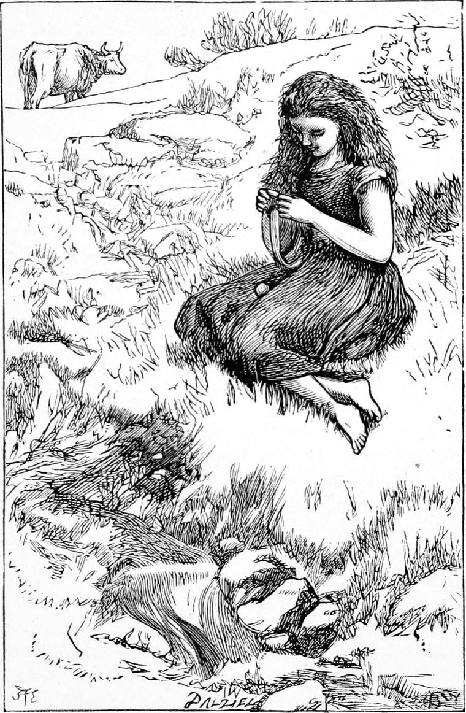

How all the boys and girls stared at me, as timidly, yet with a sense of importance derived from the distinction of having been so ill, I entered the parish school one morning, about ten o’clock! For as I said before, I had gone to school for some months before I was taken ill. It was a very different affair from Dame Shand’s tyrannical little kingdom. Here were boys of all ages, and girls likewise, ruled over by an energetic young man, with a touch of genius, manifested chiefly in an enthusiasm for teaching. He had spoken to me kindly the first day I went, and had so secured my attachment that it never wavered, not even when, once, supposing me guilty of a certain breach of orders committed by my next neighbour, he called me up, and, with more severity than usual, ordered me to hold up my hand. The lash stung me dreadfully, but I was able to smile in his face notwithstanding. I could not have done that had I been guilty. He dropped his hand, already lifted for the second blow, and sent me back to my seat. I suppose either his heart interfered, or he saw that I was not in need of more punishment. The greatest good he did me, one for which I shall be ever grateful, was the rousing in me of a love for English literature, especially poetry. But I cannot linger upon this at present, tempting although it be. I have led a busy life in the world since, but it has been one of my greatest comforts when the work of the day was over—dry work if it had not been that I had it to do—to return to my books, and live in the company of those who were greater than myself, and had had a higher work in life than mine. The master used to say that a man was fit company for any man whom he could understand, and therefore I hope often that some day, in some future condition of existence, I may look upon the faces of Milton and Bacon and Shakspere, whose writings have given me so much strength and hope throughout my life here.
The moment he saw me, the master came up to me and took me by the hand, saying he was glad to see me able to come to school again.
“You must not try to do too much at first,” he added.
This set me on my mettle, and I worked hard and with some success. But before the morning was over I grew very tired, and fell fast asleep with my head on the desk. I was informed afterwards that the master had interfered when one of my class-fellows was trying to wake me, and told him to let me sleep.
When one o’clock came, I was roused by the noise of dismissal for the two hours for dinner. I staggered out, still stupid with sleep, and whom should I find watching for me by the door-post but Turkey!
“Turkey!” I exclaimed; “you here!”
“Yes, Ranald,” he said; “I’ve put the cows up for an hour or two, for it was very hot; and Kirsty said I might come and carry you home.”
So saying he stooped before me, and took me on his strong back. As soon as I was well settled, he turned his head, and said:
“Ranald, I should like to go and have a look at my mother. Will you come? There’s plenty of time.”
“Yes, please, Turkey,” I answered. “I’ve never seen your mother.”
He set off at a slow easy trot, and bore me through street and lane until we arrived at a two-storey house, in the roof of which his mother lived. She was a widow, and had only Turkey. What a curious place her little garret was! The roof sloped down on one side to the very floor, and there was a little window in it, from which I could see away to the manse, a mile off, and far beyond it. Her bed stood in one corner, with a check curtain hung from a rafter in front of it. In another was a chest, which contained all their spare clothes, including Turkey’s best garments, which he went home to put on every Sunday morning. In the little grate smouldered a fire of oak-bark, from which all the astringent virtue had been extracted in the pits at the lanyard, and which was given to the poor for nothing.
Turkey’s mother was sitting near the little window, spinning. She was a spare, thin, sad-looking woman, with loving eyes and slow speech.
“Johnnie!” she exclaimed, “what brings you here? and who’s this you’ve brought with you?”
Instead of stopping her work as she spoke, she made her wheel go faster than before; and I gazed with admiration at her deft fingering of the wool, from which the thread flowed in a continuous line, as if it had been something plastic, towards the revolving spool.
“It’s Ranald Bannerman,” said Turkey quietly. “I’m his horse. I’m taking him home from the school. This is the first time he’s been there since he was ill.”
Hearing this, she relaxed her labour, and the hooks which had been revolving so fast that they were invisible in a mist of motion, began to dawn into form, until at length they revealed their shape, and at last stood quite still. She rose, and said:
“Come, Master Ranald, and sit down. You’ll be tired of riding such a rough horse as that.”
“No, indeed,” I said; “Turkey is not a rough horse; he’s the best horse in the world.”
“He always calls me Turkey, mother, because of my nose,” said Turkey, laughing.
“And what brings you here?” asked his mother. “This is not on the road to the manse.”
“I wanted to see if you were better, mother.”
“But what becomes of the cows?”
“Oh! they’re all safe enough. They know I’m here.”
“Well, sit down and rest you both,” she said, resuming her own place at the wheel. “I’m glad to see you, Johnnie, so be your work is not neglected. I must go on with mine.”
Thereupon Turkey, who had stood waiting his mother’s will, deposited me upon her bed, and sat down beside me.
“And how’s your papa, the good man?” she said to me.
I told her he was quite well.
“All the better that you’re restored from the grave, I don’t doubt,” she said.
I had never known before that I had been in any danger.
“It’s been a sore time for him and you too,” she added. “You must be a good son to him, Ranald, for he was in a great way about you, they tell me.”
Turkey said nothing, and I was too much surprised to know what to say; for as often as my father had come into my room, he had always looked cheerful, and I had had no idea that he was uneasy about me.
After a little more talk, Turkey rose, and said we must be going.
“Well, Ranald,” said his mother, “you must come and see me any time when you’re tired at the school, and you can lie down and rest yourself a bit. Be a good lad, Johnnie, and mind your work.”
“Yes, mother, I’ll try,” answered Turkey cheerfully, as he hoisted me once more upon his back. “Good day, mother,” he added, and left the room.
I mention this little incident because it led to other things afterwards. I rode home upon Turkey’s back; and with my father’s leave, instead of returning to school that day, spent the afternoon in the fields with Turkey.
In the middle of the field where the cattle were that day, there was a large circular mound. I have often thought since that it must have been a barrow, with dead men’s bones in the heart of it, but no such suspicion had then crossed my mind. Its sides were rather steep, and covered with lovely grass. On the side farthest from the manse, and without one human dwelling in sight, Turkey and I lay that afternoon, in a bliss enhanced to me, I am afraid, by the contrasted thought of the close, hot, dusty schoolroom, where my class-fellows were talking, laughing, and wrangling, or perhaps trying to work in spite of the difficulties of after-dinner disinclination. A fitful little breeze, as if itself subject to the influence of the heat, would wake up for a few moments, wave a few heads of horse-daisies, waft a few strains of odour from the blossoms of the white clover, and then die away fatigued with the effort. Turkey took out his Jews’ harp, and discoursed soothing if not eloquent strains.
At our feet, a few yards from the mound, ran a babbling brook, which divided our farm from the next. Those of my readers whose ears are open to the music of Nature, must have observed how different are the songs sung by different brooks. Some are a mere tinkling, others are sweet as silver bells, with a tone besides which no bell ever had. Some sing in a careless, defiant tone. This one sung in a veiled voice, a contralto muffled in the hollows of overhanging banks, with a low, deep, musical gurgle in some of the stony eddies, in which a straw would float for days and nights till a flood came, borne round and round in a funnel-hearted whirlpool. The brook was deep for its size, and had a good deal to say in a solemn tone for such a small stream. We lay on the side of the hillock, I say, and Turkey’s Jews’ harp mingled its sounds with those of the brook. After a while he laid it aside, and we were both silent for a time.
At length Turkey spoke.
“You’ve seen my mother, Ranald.”
“Yes, Turkey.”
“She’s all I’ve got to look after.”
“I haven’t got any mother to look after, Turkey.”
“No. You’ve a father to look after you. I must do it, you know. My father wasn’t over good to my mother. He used to get drunk sometimes, and then he was very rough with her. I must make it up to her as well as I can. She’s not well off, Ranald.”
“Isn’t she, Turkey?”
“No. She works very hard at her spinning, and no one spins better than my mother. How could they? But it’s very poor pay, you know, and she’ll be getting old by and by.”
“Not to-morrow, Turkey.”
“No, not to-morrow, nor the day after,” said Turkey, looking up with some surprise to see what I meant by the remark.
He then discovered that my eyes had led my thoughts astray, and that what he had been saying about his mother had got no farther than into my ears. For on the opposite side of the stream, on the grass, like a shepherdess in an old picture, sat a young girl, about my own age, in the midst of a crowded colony of daisies and white clover, knitting so that her needles went as fast as Kirsty’s, and were nearly as invisible as the thing with the hooked teeth in it that looked so dangerous and ran itself out of sight upon Turkey’s mother’s spinning-wheel. A little way from her was a fine cow feeding, with a long iron chain dragging after her. The girl was too far off for me to see her face very distinctly; but something in her shape, her posture, and the hang of her head, I do not know what, had attracted me.

“Oh! there’s Elsie Duff,” said Turkey, himself forgetting his mother in the sight—“with her granny’s cow! I didn’t know she was coming here to-day.”
“How is it,” I asked, “that she is feeding her on old James Joss’s land?”
“Oh! they’re very good to Elsie, you see. Nobody cares much about her grandmother; but Elsie’s not her grandmother, and although the cow belongs to the old woman, yet for Elsie’s sake, this one here and that one there gives her a bite for it—that’s a day’s feed generally. If you look at the cow, you’ll see she’s not like one that feeds by the roadsides. She’s as plump as needful, and has a good udderful of milk besides.”
“I’ll run down and tell her she may bring the cow into this field to-morrow,” I said, rising.
“I would if it were mine” said Turkey, in a marked tone, which I understood.
“Oh! I see, Turkey,” I said. “You mean I ought to ask my father.”
“Yes, to be sure, I do mean that,” answered Turkey.
“Then it’s as good as done,” I returned. “I will ask him to-night.”
“She’s a good girl, Elsie,” was all Turkey’s reply.
How it happened I cannot now remember, but I know that, after all, I did not ask my father, and Granny Gregson’s cow had no bite either off the glebe or the farm. And Turkey’s reflections concerning the mother he had to take care of having been interrupted, the end to which they were moving remained for the present unuttered.
I soon grew quite strong again, and had neither plea nor desire for exemption from school labours. My father also had begun to take me in hand as well as my brother Tom; and what with arithmetic and Latin together, not to mention geography and history, I had quite enough to do, and quite as much also as was good for me.